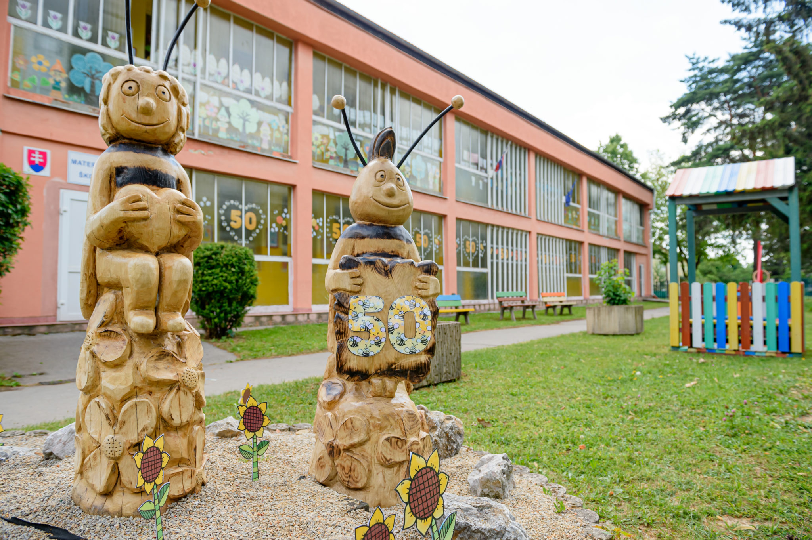
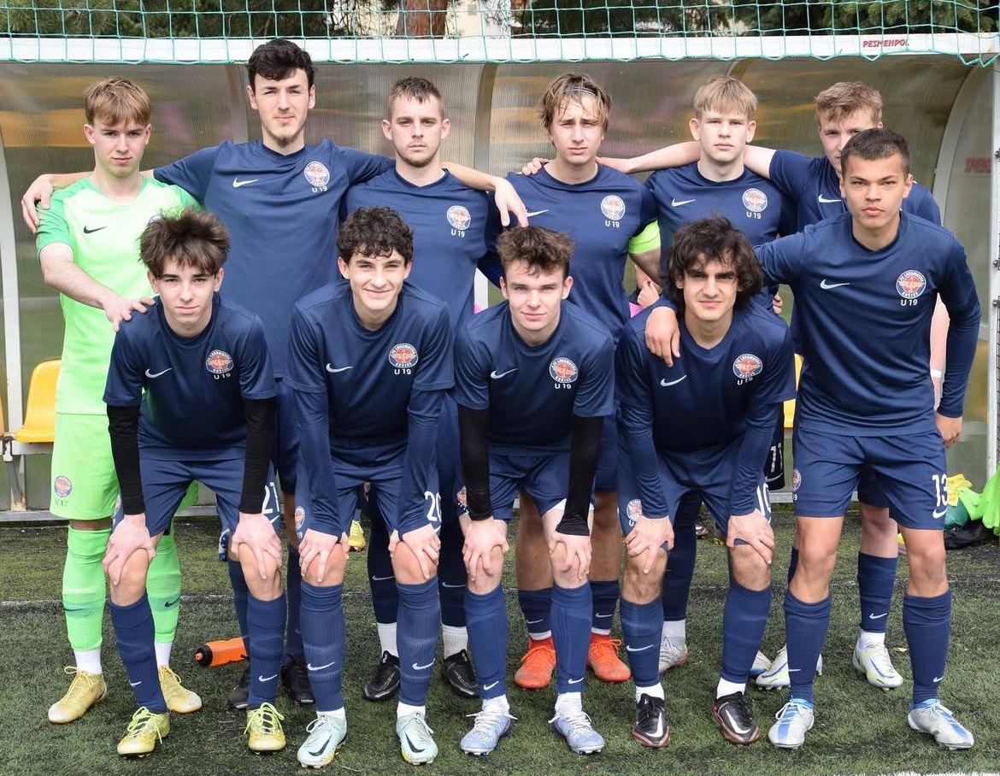
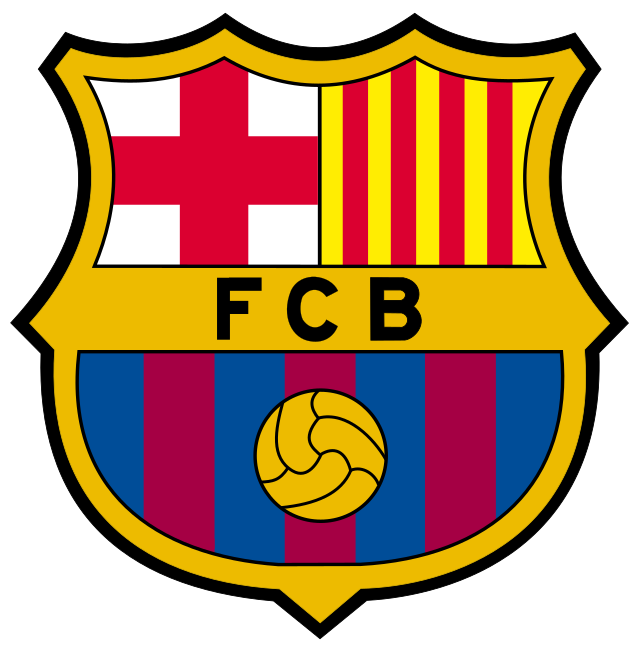

Oskar Reštei
Vzdelanie
Navštevoval som tieto školy: Materská škola Košice-Šaca
Mojou prvou školou bola materská škola v Šaci, ktorá ma pripravila na základnú školu

Základná škola Mládežnícka 3, Košice-Šaca
Na tejto škole som strávil päť rokov, po ktorých som podal prihlášku na osemročné gymnázium
Gymnázium, Alejová 1, Košice
Na tejto škole momentálne študujem na osemročnom štúdiu.
Záľuby
Medzi moje záľuby patria:Futbal
Futbalu sa venujem už 13 rokov, momentálne hrám za klub FC Lokomotíva Košice v II. lige U19.
Hrám na pozícii stredového záložníka.
Môj profil na stránkach o futbalistoch:
Tímová fotka zo sezóny 2022/2023:

Fandím klubu FC Barcelona a najradšej mám hráčov ako Leo Messi, Pedri, či Lamine Yamal.

| Sezóna | Minúty | Góly | Góly spolu |
|---|---|---|---|
| 2024/2025 | 2205 | 8 | 39 |
| 2023/2024 | 2278 | 8 | |
| 2022/2023 | 2297 | 4 | |
| 2021/2022 | 1963 | 3 | |
| 2020/2021 | 372 | 0 | |
| 2019/2020 | 757 | 2 | |
| 2018/2019 | 1155 | 2 | |
| 2017/2018 | 1020 | 4 | |
| 2016/2017 | 1350 | 4 | |
| 2015/2016 | 1080 | 4 |
Filmy
Vo voľnom čase rád pozerám filmy.
Mojimi najobľúbenejšími filmami sú Catch me if you can od Stevena Spielberga a The Grand Budapest Hotel od Wes Andersona.
Okrem toho mám rád režisérov ako Damien Chazelle, Martin Scorsese a Quentin Tarantino.
Basketbal
Basketbal nehrám kompetetívne, ale rád si zahrám s kamarátmi alebo si pozriem zápasy NBA.
Najradšej mám hráčov Stephena Curryho a Giannisa Antetokounmpa.